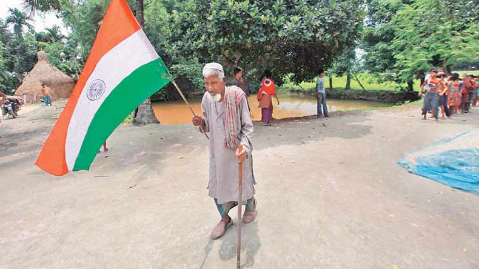

There were over 250 enclaves in the Bengal region of both India and Bangladesh prior to 2015. Image Source
India is no stranger to border disputes. The country has been in conflict with Pakistan and China over various regions bordering the two countries like Jammu and Kashmir, and Arunachal Pradesh. One border dispute of India that has gone relatively unnoticed is the one with Bangladesh. Prior to the two countries exchanging their enclaves in 2015, the border with Bangladesh had had over 223 unique enclaves of each country, 32 second-order enclaves (an enclave in an enclave), and the world’s only third-order enclave.
When the region of Bengal was split between India and Pakistan in 1947, there still existed many small kingdoms, princely states and autonomous villages in the region. Throughout the years since, these autonomous regions were given freedom to pick whether they wanted to be a part of Muslim-majority Bangladesh or Hindu-majority India. As the divide was based on religion, many groups on either side of the border picked the country that was most aligned to their religious beliefs.
Many Bangladeshis who lived in these enclaves will finally be getting Indian citizenship. Image Source
Although there was not much border control while entering and exiting the enclaves, the residents had trouble accessing resources as they were not official citizens or residents of the surrounding country. For example, if someone were to live in a Bangladeshi enclave in India, the Indian government would not provide them with ID cards required for enrolling in nearby Indian schools or visiting Indian hospitals. In many cases, it was difficult for these residents to even cross over into their country proper as they had no form of identification whatsoever. This resulted in many communities being cut off from either government.
Since 1974, the two countries have been negotiating a way to absorb the enclaves in their respective countries. In 2015, this finally came to fruition and over 50,000 people were “swapped” between the two countries. These people now have access to the basic necessities and services they lacked before.
Majumder, Sanjoy. "India-Bangladeshi Enclaves Ready to Swap Sides." BBC News. BBC, 31 July 2015. Web. 14 June 2017.
Shewly, Hosna J. "India and Bangladesh Swap Territory, Citizens in Landmark Enclave Exchange." Migrationpolicy.org. Migration Policy, 09 Mar. 2016. Web. 14 June 2017.
Woolf, Christopher. "India and Bangladesh Exchange Hundreds of Border Enclaves, and 50,000 People." Pri.org. Public Radio International, 03 Aug. 2015. Web. 15 June 2017.
{kind=link}
{kind=link}